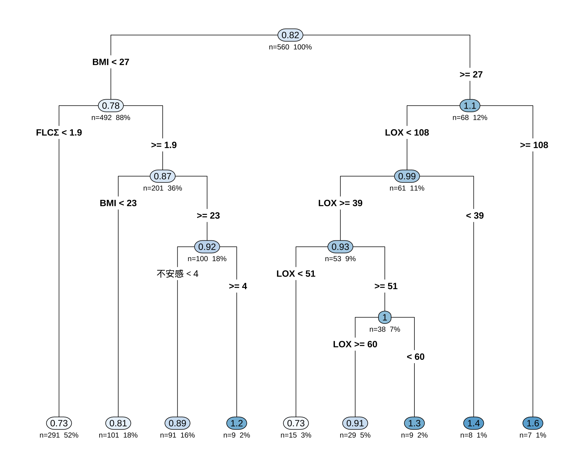
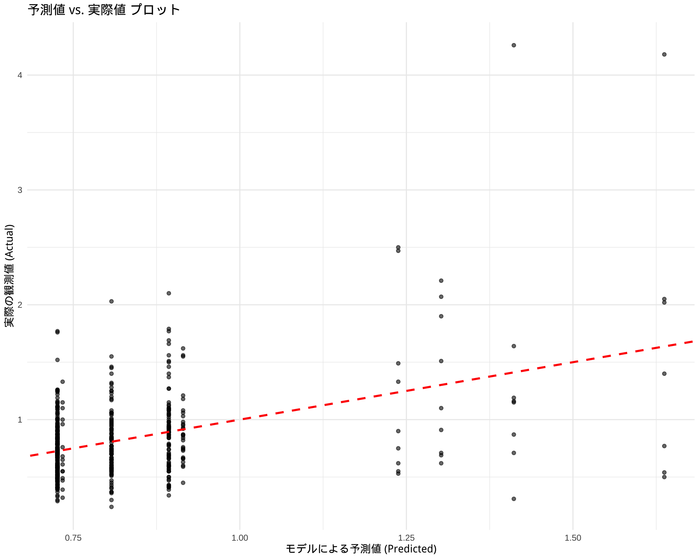
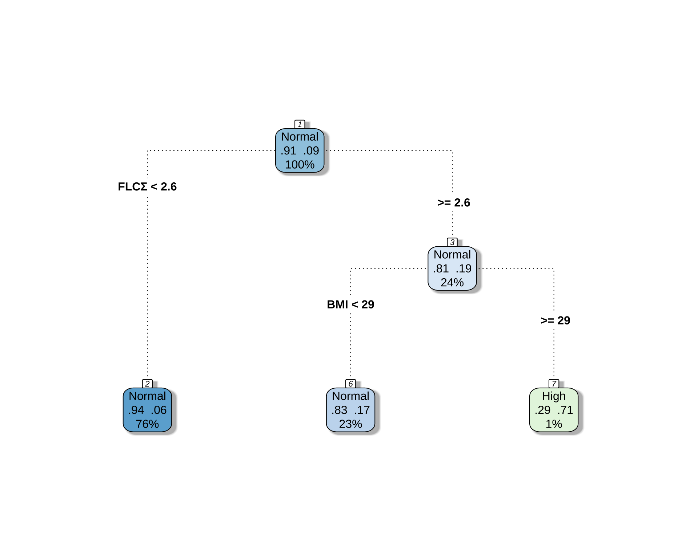
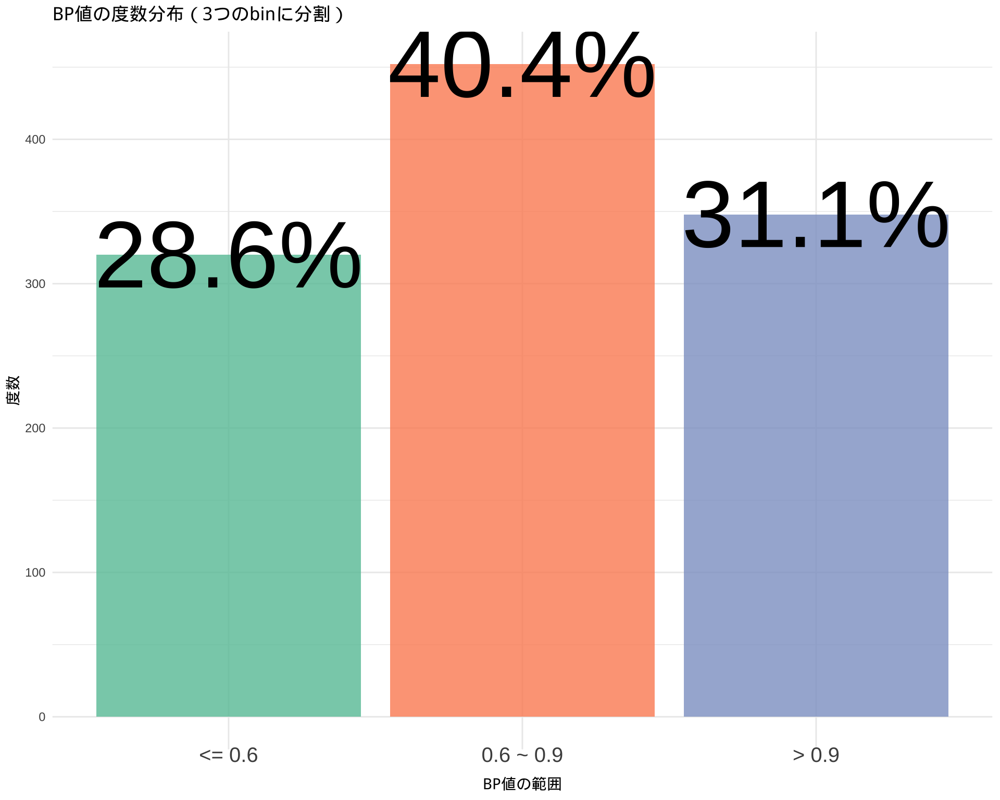
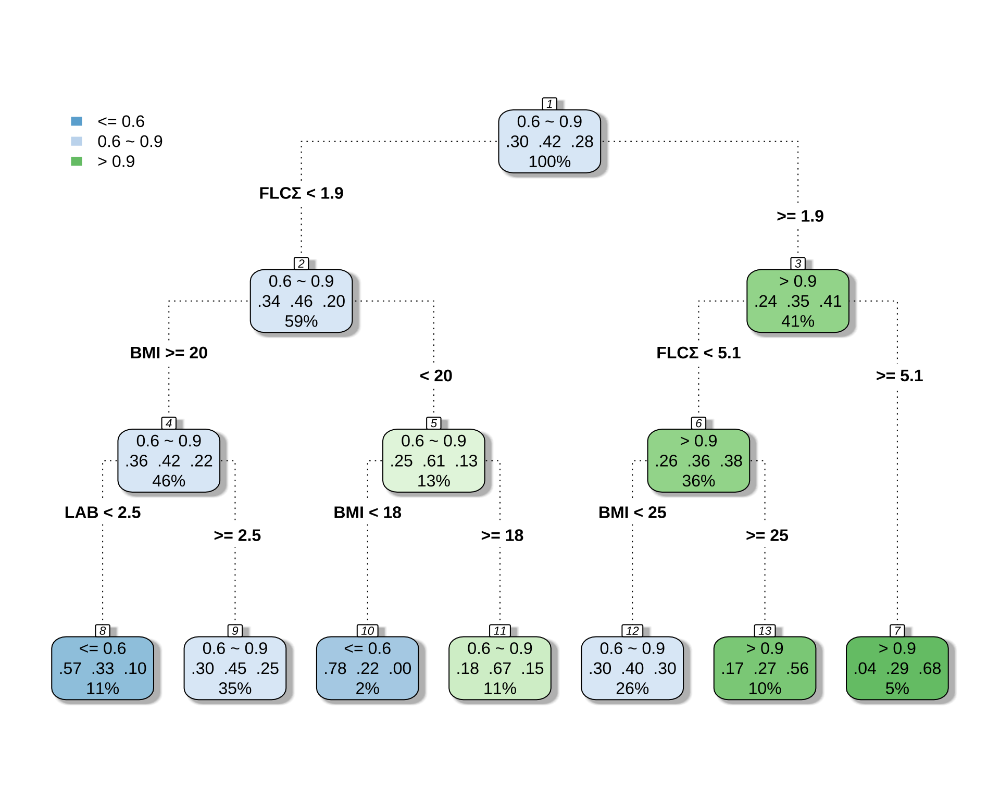
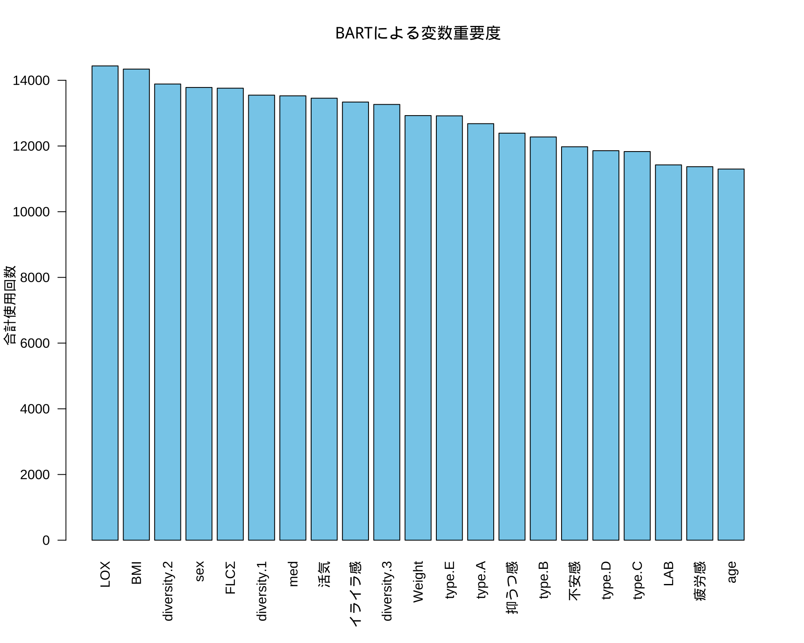

library(readxl)
library(knitr)
df <- readRDS("df.rds")
library(showtext)
showtext_auto()弘前データ５：BART による BP 予測
備考は全て外し，LOX_Index と 判別式 も説明変数としては考慮しない．
library(dplyr)
df_filtered <- df %>%
filter(is.na(BP備考), type != "D") %>%
select(-c(BP備考, LOX_Index, 判別式, id, med_col, 年代)) %>%
droplevels()1 CART モデル
1.1 回帰モデル
library(rpart)
library(rpart.plot)
control_params <- rpart.control(maxdepth = 5)
cart_model <- rpart(
BP ~ ., # 目的変数を5クラスのものに変更
data = df_filtered,
method = "anova", # 分類なので "class" のまま
control = control_params
)
printcp(cart_model)
Regression tree:
rpart(formula = BP ~ ., data = df_filtered, method = "anova",
control = control_params)
Variables actually used in tree construction:
[1] BMI FLCΣ LOX 不安感
Root node error: 81.91/560 = 0.14627
n=560 (4 observations deleted due to missingness)
CP nsplit rel error xerror xstd
1 0.055480 0 1.00000 1.0057 0.21310
2 0.031846 1 0.94452 0.9954 0.20224
3 0.028171 2 0.91267 1.1215 0.20807
4 0.019700 3 0.88450 1.1146 0.20688
5 0.011170 4 0.86480 1.1579 0.21068
6 0.010133 6 0.84246 1.1796 0.20804
7 0.010000 8 0.82220 1.1866 0.21100# 決定木を可視化
rpart.plot(cart_model,
type = 4, # ノードのラベル表示形式
extra = 101, # 各ノードにレコードの割合(%)と目的変数の平均値を表示
under = TRUE, # 分岐の下に箱を表示
fallen.leaves = TRUE, # 最終ノード（葉）をグラフの下部に揃える
box.palette = "auto" # ノードの色を自動で設定
)
初っ端から「女性ならばほとんど Type B だ」と決めつけているのが面白い．
1.2 モデル評価
# モデルを使って予測値を計算
predictions <- predict(cart_model, newdata = df_filtered)
# 実際値と予測値のデータフレームを作成
results <- data.frame(
Actual = df_filtered$BP,
Predicted = predictions
)
# ggplot2を使った可視化例
library(ggplot2)
ggplot(results, aes(x = Predicted, y = Actual)) +
geom_point(alpha = 0.6) + # 点をプロット
geom_abline(color = "red", linetype = "dashed", size = 1) + # y=xの線を引く
labs(
title = "予測値 vs. 実際値 プロット",
x = "モデルによる予測値 (Predicted)",
y = "実際の観測値 (Actual)"
) +
theme_minimal()Warning: Using `size` aesthetic for lines was deprecated in ggplot2 3.4.0.
ℹ Please use `linewidth` instead.Warning: Removed 4 rows containing missing values or values outside the scale range
(`geom_point()`).
1.3 分類モデル
sum(df$BP > 1.2, na.rm = TRUE) / sum(!is.na(df$BP))[1] 0.1241071library(rpart)
library(rpart.plot)
df$BP_flag <- case_when(
df$BP > 1.2 ~ 2,
df$BP <= 1.2 ~ 1
) %>%
factor(levels = c(1, 2), labels = c("Normal", "High"))
df_filtered <- df %>%
filter(is.na(BP備考)) %>%
select(-c(BP備考, LOX_Index, 判別式, id, med_col, 年代, BP))
# df_filtered からモデルを構築
# BP_level ~ . は、「BP_level を他の全ての変数で説明する」という意味
cart_model <- rpart(
BP_flag ~ .,
data = df_filtered,
method = "class" # 分類問題なので "class" を指定
)
# 結果の要約を表示
printcp(cart_model)
Classification tree:
rpart(formula = BP_flag ~ ., data = df_filtered, method = "class")
Variables actually used in tree construction:
[1] BMI FLCΣ
Root node error: 54/576 = 0.09375
n=576 (8 observations deleted due to missingness)
CP nsplit rel error xerror xstd
1 0.027778 0 1.00000 1.0000 0.12955
2 0.010000 2 0.94444 1.1852 0.13968# 決定木を可視化
rpart.plot(
cart_model,
type = 4, # ノードの表示スタイル
extra = 104, # 各ノードに所属するクラスの割合を表示 (例: L/M/H -> 239/12/0)
box.palette = "BuGn", # カラーパレット
branch.lty = 3, # 枝の線の種類
shadow.col = "gray", # 影の色
nn = TRUE # ノード番号を表示
)
# 予測値を取得
predictions <- predict(cart_model, newdata = df_filtered, type = "class")
# 混同行列を作成
confusion_matrix <- table(Actual = df_filtered$BP_flag, Predicted = predictions)
print(confusion_matrix) Predicted
Actual Normal High
Normal 520 2
High 49 5# 正答率を計算
accuracy <- sum(predictions == df_filtered$BP_flag, na.rm = TRUE) / sum(!is.na(df_filtered$BP_flag))
cat("正答率:", round(accuracy * 100, 2), "%\n")正答率: 91.15 %正答率は 90.6% から 91.15% になるだけである．つまり，上位 12 % の BP 者を決定木的に予測することは，与えられた説明変数からはほとんど無理なタスクである．
1.4 3分類モデル
library(dplyr)
df$BP_level <- case_when(
df$BP > 0.9 ~ 3,
df$BP > 0.6 & df$BP <= 0.9 ~ 2,
df$BP <= 0.6 ~ 1
) %>%
factor(levels = c(1, 2, 3), labels = c("<= 0.6", "0.6 ~ 0.9", "> 0.9"))sum(df$BP > 0.9, na.rm = TRUE) / sum(!is.na(df$BP))[1] 0.3107143sum(df$BP > 0.6 & df$BP <= 0.9, na.rm = TRUE) / sum(!is.na(df$BP))[1] 0.4035714sum(df$BP <= 0.6, na.rm = TRUE) / sum(!is.na(df$BP))[1] 0.2857143library(ggplot2)
ggplot(subset(df, !is.na(BP_level)), aes(x = BP_level, fill = BP_level)) +
geom_bar(stat = "count", alpha = 0.8) +
geom_text(data = subset(df, !is.na(BP_level)), aes(label = scales::percent(..count../sum(..count..), accuracy = 0.1)), stat = "count", size = 24) +
scale_fill_brewer(palette = "Set2") +
labs(
title = "BP値の度数分布（3つのbinに分割）",
x = "BP値の範囲",
y = "度数",
fill = "BP値の範囲"
) +
theme_minimal() +
theme(
axis.text.x = element_text(size = 15, vjust = 3),
legend.position = "none",
)Warning: The dot-dot notation (`..count..`) was deprecated in ggplot2 3.4.0.
ℹ Please use `after_stat(count)` instead.
library(rpart)
library(rpart.plot)
df_filtered <- df %>%
filter(is.na(BP備考)) %>%
select(-c(BP備考, LOX_Index, 判別式, id, med_col, age, BP, BP_flag))
control_params <- rpart.control(maxdepth = 3)
# BP_level ~ . は、「BP_level を他の全ての変数で説明する」という意味
cart_model <- rpart(
BP_level ~ .,
data = df_filtered,
method = "class", # 分類問題なので "class" を指定
control = control_params
)
# 結果の要約を表示
printcp(cart_model)
Classification tree:
rpart(formula = BP_level ~ ., data = df_filtered, method = "class",
control = control_params)
Variables actually used in tree construction:
[1] BMI FLCΣ LAB
Root node error: 335/576 = 0.5816
n=576 (8 observations deleted due to missingness)
CP nsplit rel error xerror xstd
1 0.041791 0 1.00000 1.0000 0.035341
2 0.022388 1 0.95821 1.0478 0.034953
3 0.020896 3 0.91343 1.0179 0.035209
4 0.014925 5 0.87164 1.0090 0.035277
5 0.010000 6 0.85672 1.0119 0.035255# 決定木を可視化
rpart.plot(
cart_model,
type = 4, # ノードの表示スタイル
extra = 104, # 各ノードに所属するクラスの割合を表示 (例: L/M/H -> 239/12/0)
box.palette = "BuGn", # カラーパレット
branch.lty = 3, # 枝の線の種類
shadow.col = "gray", # 影の色
nn = TRUE # ノード番号を表示
)
# 予測値を取得
predictions <- predict(cart_model, newdata = df_filtered, type = "class")
# 混同行列を作成
confusion_matrix <- table(Actual = df_filtered$BP_level, Predicted = predictions)
print(confusion_matrix) Predicted
Actual <= 0.6 0.6 ~ 0.9 > 0.9
<= 0.6 42 118 11
0.6 ~ 0.9 22 195 24
> 0.9 6 106 52# 正答率を計算
accuracy <- sum(predictions == df_filtered$BP_level, na.rm = TRUE) / sum(!is.na(df_filtered$BP_level))
cat("正答率:", round(accuracy * 100, 2), "%\n")正答率: 50.17 %2 BART による変数選択
2.1 モデル構築
df_filtered <- df %>%
filter(is.na(BP備考)) %>%
select(-c(BP備考, LOX_Index, 判別式, id, med_col, 年代, BP_level, BP_flag))library(dbarts)
# 説明変数と被説明変数を準備
x_vars <- df_filtered[, !(names(df_filtered) %in% "BP")]
y_var <- df_filtered$BP
# 欠損値を含む行を削除
complete_cases <- complete.cases(x_vars, y_var)
x_vars_clean <- x_vars[complete_cases, ]
y_var_clean <- y_var[complete_cases]
# BARTモデルの実行
bart_model <- bart(
x.train = x_vars_clean,
y.train = y_var_clean,
# power = 5.0,
# base = 0.7
)summary(bart_model) Length Class Mode
call 3 -none- call
first.sigma 100 -none- numeric
sigma 1000 -none- numeric
sigest 1 -none- numeric
yhat.train 546000 -none- numeric
yhat.train.mean 546 -none- numeric
yhat.test 0 -none- NULL
yhat.test.mean 0 -none- NULL
varcount 21000 -none- numeric
y 546 -none- numeric
n.chains 1 -none- numeric2.2 変数選択
# 1. 変数ごと（列ごと）に使用回数を合計する
# colSums() を使って、1000回のMCMCステップでのカウントを各変数について合計します。
var_importance_scores <- colSums(bart_model$varcount)
# 2. 結果を重要度の降順でソートする
sorted_importance <- sort(var_importance_scores, decreasing = TRUE)
# ソートされた結果の確認
print(sorted_importance) LOX BMI diversity.2 sex FLCΣ diversity.1
14438 14341 13887 13782 13760 13548
med 活気 イライラ感 diversity.3 Weight type.E
13527 13455 13338 13265 12926 12918
type.A 抑うつ感 type.B 不安感 type.D type.C
12680 12391 12275 11977 11857 11831
LAB 疲労感 age
11425 11370 11299 # 3. barplot() を使ってプロットする (より見やすいプロット)
# barplot() の方がこの種のデータには適しています。
# las=2 は、変数名が重ならないように軸ラベルを垂直にします。
par(mar = c(6, 4, 4, 2) + 0.1) # 下側のマージンを広げてラベルを表示
barplot(sorted_importance,
las = 2,
main = "BARTによる変数重要度",
ylab = "合計使用回数",
xlab = "",
col = "skyblue")